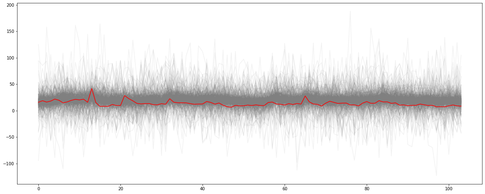
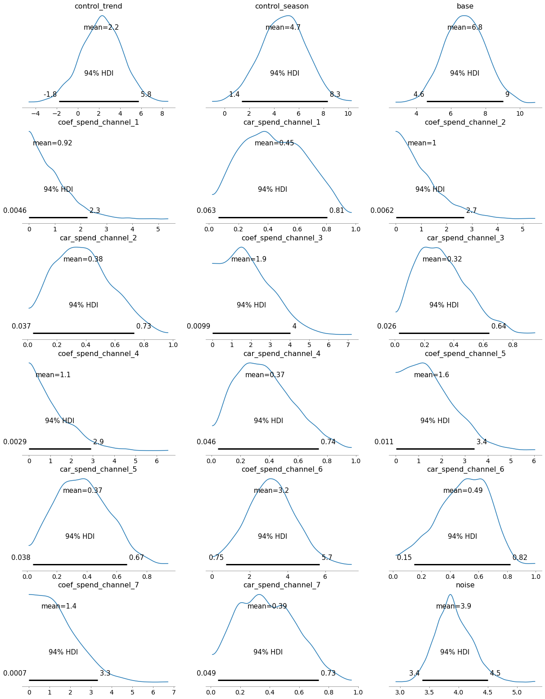

The Problem Statement and the proposed Bayesian MMM solution
Consider a company, which runs an online shop, and advertises on seven different paid channels (TV, radio, billboards, Google Ads, etc). Based on weekly data on weekly advertisement costs and revenue available for 2 years, the company would like to understand how effective different channels are. One has to take into account that marketing actions have usually not an immediate effect, ads and campaigns in one week influence usually sales in the coming weeks. So different channels can be expected to target different audiences at different times and for different durations, and hence will have lagged effects on revenue.
For this problem, I used a Bayesian Media Mix Modelling approach. MMM can be perfomed with a simpler linear regression approach, however with a bayesian approach, we can find more robust solutions and quantify uncertainty. For this work, I took inspiration and used code from the following sources: - Blogpost #1 by Robert Kübler - Blogpost #2 by Slava Kisilevich - Git repo #1 by Slava Kisilevich - Git repo #2 by Ilya Katsov - Jin et al. 2017
Install / Import Packages
!pip install pymc3
Looking in indexes: https://pypi.org/simple, https://us-python.pkg.dev/colab-wheels/public/simple/
Collecting pymc3
Downloading pymc3-3.11.5-py3-none-any.whl (872 kB)
━━━━━━━━━━━━━━━━━━━━━━━━━━━━━━━━━━━━━━ 872.2/872.2 KB 12.7 MB/s eta 0:00:00
Requirement already satisfied: arviz>=0.11.0 in /usr/local/lib/python3.8/dist-packages (from pymc3) (0.12.1)
Requirement already satisfied: pandas>=0.24.0 in /usr/local/lib/python3.8/dist-packages (from pymc3) (1.3.5)
Collecting semver>=2.13.0
Downloading semver-2.13.0-py2.py3-none-any.whl (12 kB)
Collecting theano-pymc==1.1.2
Downloading Theano-PyMC-1.1.2.tar.gz (1.8 MB)
━━━━━━━━━━━━━━━━━━━━━━━━━━━━━━━━━━━━━━━━ 1.8/1.8 MB 56.3 MB/s eta 0:00:00
Preparing metadata (setup.py) ... done
Requirement already satisfied: scipy<1.8.0,>=1.7.3 in /usr/local/lib/python3.8/dist-packages (from pymc3) (1.7.3)
Requirement already satisfied: cachetools>=4.2.1 in /usr/local/lib/python3.8/dist-packages (from pymc3) (5.3.0)
Requirement already satisfied: numpy<1.22.2,>=1.15.0 in /usr/local/lib/python3.8/dist-packages (from pymc3) (1.21.6)
Requirement already satisfied: fastprogress>=0.2.0 in /usr/local/lib/python3.8/dist-packages (from pymc3) (1.0.3)
Collecting deprecat
Downloading deprecat-2.1.1-py2.py3-none-any.whl (9.8 kB)
Requirement already satisfied: patsy>=0.5.1 in /usr/local/lib/python3.8/dist-packages (from pymc3) (0.5.3)
Requirement already satisfied: dill in /usr/local/lib/python3.8/dist-packages (from pymc3) (0.3.6)
Requirement already satisfied: typing-extensions>=3.7.4 in /usr/local/lib/python3.8/dist-packages (from pymc3) (4.4.0)
Requirement already satisfied: filelock in /usr/local/lib/python3.8/dist-packages (from theano-pymc==1.1.2->pymc3) (3.9.0)
Requirement already satisfied: setuptools>=38.4 in /usr/local/lib/python3.8/dist-packages (from arviz>=0.11.0->pymc3) (57.4.0)
Requirement already satisfied: netcdf4 in /usr/local/lib/python3.8/dist-packages (from arviz>=0.11.0->pymc3) (1.6.2)
Requirement already satisfied: xarray-einstats>=0.2 in /usr/local/lib/python3.8/dist-packages (from arviz>=0.11.0->pymc3) (0.5.1)
Requirement already satisfied: xarray>=0.16.1 in /usr/local/lib/python3.8/dist-packages (from arviz>=0.11.0->pymc3) (2022.12.0)
Requirement already satisfied: matplotlib>=3.0 in /usr/local/lib/python3.8/dist-packages (from arviz>=0.11.0->pymc3) (3.2.2)
Requirement already satisfied: packaging in /usr/local/lib/python3.8/dist-packages (from arviz>=0.11.0->pymc3) (23.0)
Requirement already satisfied: python-dateutil>=2.7.3 in /usr/local/lib/python3.8/dist-packages (from pandas>=0.24.0->pymc3) (2.8.2)
Requirement already satisfied: pytz>=2017.3 in /usr/local/lib/python3.8/dist-packages (from pandas>=0.24.0->pymc3) (2022.7.1)
Requirement already satisfied: six in /usr/local/lib/python3.8/dist-packages (from patsy>=0.5.1->pymc3) (1.15.0)
Requirement already satisfied: wrapt<2,>=1.10 in /usr/local/lib/python3.8/dist-packages (from deprecat->pymc3) (1.14.1)
Requirement already satisfied: kiwisolver>=1.0.1 in /usr/local/lib/python3.8/dist-packages (from matplotlib>=3.0->arviz>=0.11.0->pymc3) (1.4.4)
Requirement already satisfied: cycler>=0.10 in /usr/local/lib/python3.8/dist-packages (from matplotlib>=3.0->arviz>=0.11.0->pymc3) (0.11.0)
Requirement already satisfied: pyparsing!=2.0.4,!=2.1.2,!=2.1.6,>=2.0.1 in /usr/local/lib/python3.8/dist-packages (from matplotlib>=3.0->arviz>=0.11.0->pymc3) (3.0.9)
Requirement already satisfied: cftime in /usr/local/lib/python3.8/dist-packages (from netcdf4->arviz>=0.11.0->pymc3) (1.6.2)
Building wheels for collected packages: theano-pymc
Building wheel for theano-pymc (setup.py) ... done
Created wheel for theano-pymc: filename=Theano_PyMC-1.1.2-py3-none-any.whl size=1529963 sha256=a8d3203b24640e174f5115f3eddd43eb40486c217fa49968c76c60340488c1a0
Stored in directory: /root/.cache/pip/wheels/0e/41/d2/82c7b771236f987def7fe2e51855cce22b270327f3fedec57c
Successfully built theano-pymc
Installing collected packages: semver, deprecat, theano-pymc, pymc3
Successfully installed deprecat-2.1.1 pymc3-3.11.5 semver-2.13.0 theano-pymc-1.1.2
import arviz as azimport matplotlib.pyplot as pltimport mathimport matplotlib.pyplot as pltimport numpy as npimport pandas as pdimport prophetimport pymc3 as pm3import seaborn as snsimport theanoimport theano.tensor as ttfrom sklearn.preprocessing import MinMaxScaler #, #StandardScaler, PowerTransformerfrom sklearn.metrics import mean_absolute_error, mean_absolute_percentage_error, r2_score
prophet_columns = [col for col in prophet_predict.columns if (col.endswith("upper") ==False) & (col.endswith("lower") ==False)]events_numeric = prophet_predict[prophet_columns].filter(like ="events_").sum(axis =1)final_data = data_wdates.copy()final_data["trend"] = prophet_predict["trend"]final_data["season"] = prophet_predict["yearly"]
X = final_data.drop(columns=['revenue', 'start_of_week'])y = final_data['revenue']
The Model
#this is an infinite-length function but it slows down the code too muchdef carryover_infinite(x, theta): x = tt.as_tensor_variable(x)#x = tt.vector("x")#theta = tt.scalar("theta")def carryover_infinite_recurrence(index, input_x, decay_x, theta):return tt.set_subtensor(decay_x[index], tt.sum(input_x + theta * decay_x[index -1])) len_observed = x.shape[0] x_decayed = tt.zeros_like(x) x_decayed = tt.set_subtensor(x_decayed[0], x[0]) output, _ = theano.scan( fn = carryover_infinite_recurrence, sequences = [tt.arange(1, len_observed), x[1:len_observed]], outputs_info = x_decayed, non_sequences = theta, n_steps = len_observed -1 )return output[-1]
#Here is a simpler function with finite length as an explicit parameterdef carryover(x, strength, length=14): w = tt.as_tensor_variable( [tt.power(strength, i) for i inrange(length)] ) x_lags = tt.stack( [tt.concatenate([tt.zeros(i),x[:x.shape[0]-i]]) for i inrange(length)] )return tt.dot(w, x_lags)
control_variables = ["trend", "season"]delay_channels = [f'spend_channel_{i}'for i inrange(1,8)]transform_variables = control_variables+delay_channelsy_transformed=y/10000#rescale target variableX_transformed = X.copy() #Min-max scale the featuresnumerical_encoder_dict = {}for feature in transform_variables: scaler = MinMaxScaler() original = final_data[feature].values.reshape(-1, 1) transformed = scaler.fit_transform(original) X_transformed[feature] = transformed numerical_encoder_dict[feature] = scalerwith pm3.Model() as mmm1: channel_contributions = []for channel in delay_channels:print(f"Delay channels: Adding {channel}")#Force the channel coefficients to be normal: coef = pm3.HalfNormal(f'coef_{channel}', sigma =2) car = pm3.Beta(f'car_{channel}', alpha=2, beta=2) channel_data = X_transformed[channel].values channel_contribution = pm3.Deterministic(f'contribution_{channel}', coef * carryover( channel_data, car), ) channel_contributions.append(channel_contribution) control_contributions = []for control_var in control_variables:print(f"Control Variables: Adding {control_var}") x = X_transformed[control_var].values control_beta = pm3.Normal(f"control_{control_var}", sigma =3) control_x = control_beta * x control_contributions.append(control_x) base = pm3.Normal("base", np.mean(y_transformed.values), sigma =2)#base = pm3.Exponential('base', lam=0.01) noise = pm3.Exponential('noise', lam=0.1) sales = pm3.Normal('sales', mu= base +sum(control_contributions) +sum(channel_contributions), sigma=noise, observed=y_transformed )
with mmm1: prior_pred = pm3.sample_prior_predictive()prior_names = [prior_name for prior_name inlist(prior_pred.keys()) if (prior_name.endswith("logodds__") ==False) & (prior_name.endswith("_log__") ==False)]fig, ax = plt.subplots(figsize = (20, 8))_ = ax.plot(prior_pred["sales"].T, color ="0.5", alpha =0.1)_ = ax.plot(y_transformed.values, color ="red")
WARNING:theano.tensor.blas:We did not find a dynamic library in the library_dir of the library we use for blas. If you use ATLAS, make sure to compile it with dynamics library.
WARNING:theano.tensor.blas:We did not find a dynamic library in the library_dir of the library we use for blas. If you use ATLAS, make sure to compile it with dynamics library.

#plots priors using the random variablesdef plot_priors(variables, prior_dictionary =None):ifisinstance(variables[0], pm3.model.TransformedRV) ==Falseand prior_dictionary isNone:raiseException("prior dictionary should be provided. It can be generated by sample_prior_predictive") cols =7 rows =int(math.ceil(len(variables)/cols)) fig, ax = plt.subplots(rows, cols, figsize=(15, 3*rows)) ax = np.reshape(ax, (-1, cols))for i inrange(rows):for j inrange(cols): vi = i*cols + jif vi <len(variables): var = variables[vi]ifisinstance(var, pm3.model.TransformedRV): sns.histplot(var.random(size=10000).flatten(), kde=True, ax=ax[i, j])#p.set_axis_labels(var.name) ax[i, j].set_title(var.name)else: prior = prior_dictionary[var] sns.histplot(prior, kde=True, ax = ax[i, j]) ax[i, j].set_title(var) plt.tight_layout()adstock_priors = [p for p in prior_names if p.startswith("car")]plot_priors(adstock_priors, prior_pred)print(f"carryover priors: {len(adstock_priors)}")# alpha_priors = [p for p in prior_names if p.startswith("sat")]# plot_priors(alpha_priors, prior_pred)# print(f"sat priors: {len(alpha_priors)}")media_coef_priors = [p for p in prior_names if p.startswith("coef")]plot_priors(media_coef_priors, prior_pred)print(f"coef priors: {len(media_coef_priors)}")control_coef_priors = [p for p in prior_names if p.startswith("control_")] + ["base"]plot_priors(control_coef_priors, prior_pred)print(f"control coef priors: {len(control_coef_priors)}")#plot_priors(["sigma"], prior_pred)print(f"sigma prior: 1")
array([[<matplotlib.axes._subplots.AxesSubplot object at 0x7fabda7341f0>,
<matplotlib.axes._subplots.AxesSubplot object at 0x7fabda6135e0>,
<matplotlib.axes._subplots.AxesSubplot object at 0x7fabda3fd820>],
[<matplotlib.axes._subplots.AxesSubplot object at 0x7fabda5197f0>,
<matplotlib.axes._subplots.AxesSubplot object at 0x7fabda2ba340>,
<matplotlib.axes._subplots.AxesSubplot object at 0x7fabd96bab20>],
[<matplotlib.axes._subplots.AxesSubplot object at 0x7fabd9662e50>,
<matplotlib.axes._subplots.AxesSubplot object at 0x7fabd96eee20>,
<matplotlib.axes._subplots.AxesSubplot object at 0x7fabd9090a60>],
[<matplotlib.axes._subplots.AxesSubplot object at 0x7fabd8ffd820>,
<matplotlib.axes._subplots.AxesSubplot object at 0x7fabd7e2bf70>,
<matplotlib.axes._subplots.AxesSubplot object at 0x7fabd9dd2a90>],
[<matplotlib.axes._subplots.AxesSubplot object at 0x7fabd9ccf670>,
<matplotlib.axes._subplots.AxesSubplot object at 0x7fabd9cef880>,
<matplotlib.axes._subplots.AxesSubplot object at 0x7fabd9c244f0>],
[<matplotlib.axes._subplots.AxesSubplot object at 0x7fabd9d9f4f0>,
<matplotlib.axes._subplots.AxesSubplot object at 0x7fabd9e3adf0>,
<matplotlib.axes._subplots.AxesSubplot object at 0x7fabdab3aa90>]],
dtype=object)

Predictions vs Observations
with mmm1: posterior = pm3.sample_posterior_predictive(trace)